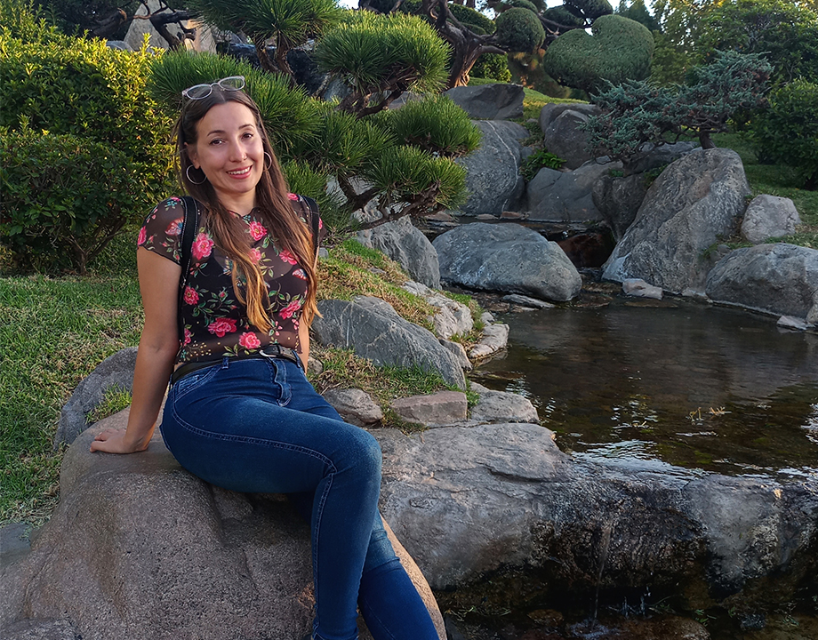

Noelia Elizabeth Argüello

¿Quién soy?
Me llamo Noelia Elizabeth Argüello, tengo 32 años y estudio la Licenciatura en Diseño y Comunicación Visual en la Universidad Nacional de Lanús (UNLa). Vivo en Gregorio de Laferrere, Buenos Aires, con mi familia y mis mascotas. Particularmente tengo dos gatas que adopté que son mis compañeras en el estudio hasta las altas horas de la noche, ya que suelo concentrarme mejor en ese horario.
Mis estudios
En 2011 comencé a estudiar la Licenciatura en psicología en la Universidad de Buenos Aires (UBA). A los años decidí cambiar de carrera y actualmente estudio la Licenciatura en Diseño y Comunicación Visual en la Universidad Nacional de Lanús (UNLa). Estoy cursando el cuarto año de la misma.
Hobbies
Me gusta mucho pasar horas dibujando, cantando y tocando la guitarra o aprendiendo sobre un nuevo instrumento (sé algo de harmónica, flauta, teclado y ukelele). Disfruto mucho aprender y aplicar nuevas herramientas de diseño. También me gusta mucho tomar clases de tango y, aunque aún no pude, me gustaría ir a milongas a bailar.
Programas
Durante el transcurso de la carrera fui aprendiendo sobre todo programas del paquete de Adobe. Con el que mejor me desenvuelvo es Illustrator. Le sigue Pothoshop e In Design. Este último tiempo estuve aprendiendo a trabajar con Figma, así como también a trabajar con Visual Studio Code y Github.
¿Porqué diseño?
Cuando era chica me gustaba probar programas de diseño, editar fotos y videos propios o para el colegio. También ilustraba con los programas que tenía a mano. Un día en la casa de una amiga vi que su papá estaba armando una página web y me gustó su trabajo. Desde allí la idea me quedó resonando pues sabía que era algo que me gustaría hacer toda la vida.